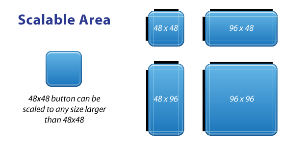
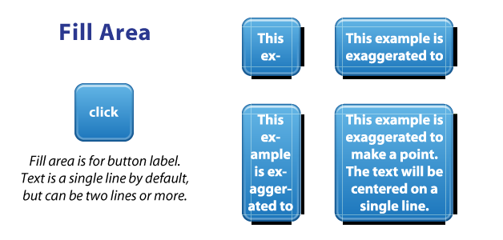

Scalable images adapts its size to the content. This allows us to use only one image for many different sizes. The most common case of use is the one of an image used as a background for a rounded button. The Scalable Image Property indicates if an image is or not scalable. If the image is scalable, two extra properties groups will be shown for the image object: Scalable area and Fill area.  The Scalable area is used to indicate the areas of the image that can be scaled to fill the required size. This area is indicated in the following properties:
These properties represent the distance between each border of the image and the center of it that should not be scaled. Their values are expressed on pixels and must be larger than 0.  The Fill area is used to indicate the rectangle where the content (text, images, etc.). This area is indicated in the following properties:
Its default value is taken from Image Scale area - Top
Its default value is taken from Image Scale area - Left
Its default value is taken from Image Scale area - Bottom
Its default value is taken from Scale area - Right These properties represent the distance between each border of the image and the center of it that should not be scaled. Their values are expressed on pixels and must be larger than 0. Note: .9 Patch images with more than one scalable area are not supported.
|
| Backlinks | |
| Fill Area property | Category:Image object |
| Scalable Area property |